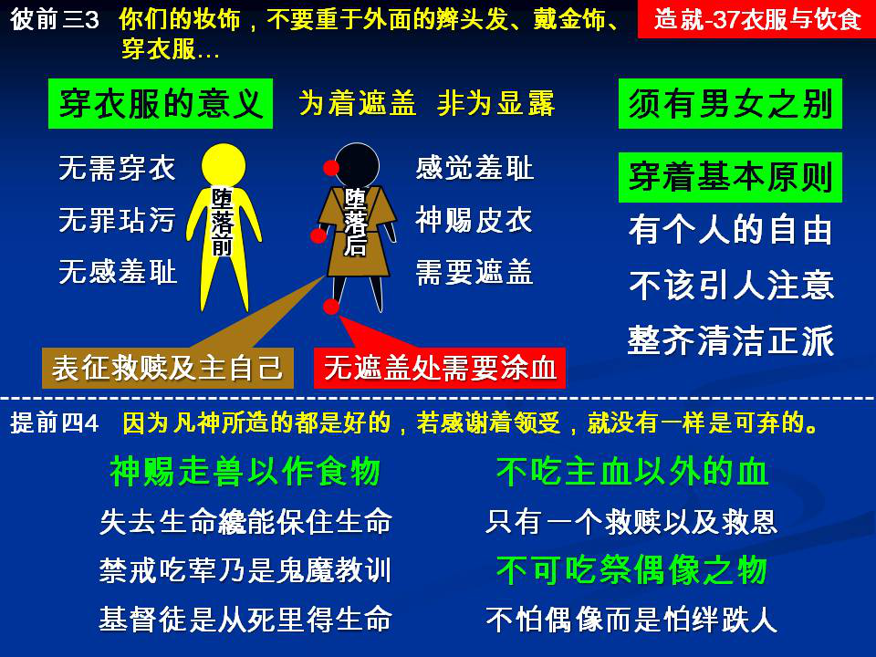

诗歌：237首、155首
重要经文：
彼得前书三章三至五节：你们的妆饰，不要重于外面的辫头发、戴金饰、穿衣服，乃要重于那以温柔安静的灵为不朽坏之妆饰的心中隐藏的人，这在神面前是极有价值的。因为从前那仰望神的圣别妇人，也是这样妆饰是自己，服从自己的丈夫。
提摩太前书四章三至四节：他们禁止嫁娶,禁戒食物,就是神所造，给那些信的人，并认识真理的人，感谢着享受的。因为凡神所造的都是好的，若感谢着领受，就没有一样是可弃的。
纲目要点：
壹 衣服：
一 穿衣服的意义：
１ 人在犯罪后需要穿上衣服遮盖羞耻。
２ 衣服是代表救赎和主耶稣自己。
二 衣服要有男女之别。
三 二点原则：
１ 有个人的自由。
２ 不该叫人注意你的衣服。
贰 食物：
一 神把走兽给人作食物：
１ 需要失去生命才能保住生命。
２ 戒荤是鬼魔的道理。
二 神禁止我们吃任何的血，但吃主血的人可蒙拯救。
三 不可吃祭偶像之物。
信息选读：
人在犯罪后需要穿上衣服遮盖羞耻
罪一进来，第一个结果就是说，人看见自己赤身露体，就立刻感觉到自己羞耻。所以他们就用无花果树的叶子编成裙子，给自己穿上。所以衣服的基本意义，乃是为着遮盖。衣服的用处就是为着遮盖。所可惜的是，人所造的无花果树叶子的裙子，不能长久；一枯乾，也许都破碎了，都飞去了。然后神用皮子给人穿上，祂叫人穿结实耐久的衣服。那一个目的乃是为着遮盖身体。所以穿衣服是为着遮盖，不是为着显露。所有的衣服不是为着遮盖的，都是错的。衣服是为着遮盖的。
衣服遮盖得越多越好
今天的失败是人越过越回到野蛮人的地步去，衣服遮盖得很少，这是不合式的。衣服是为着遮盖的。凡不是为着遮盖的，都是违背神遮盖的意义。血是预表，属灵的意义是拒绝显露。人犯了罪，人需要在神面前有遮盖。今天凡是把袖子作得很短的，或者把衣襟作得很短的；凡是显露身体，而不是遮盖身体的，都是这世界所作的事，而不是神所作的事。以衣服的意义来看，是遮盖得越多越好。因为我是一个罪人，我愿意在神面前有一个完全的遮盖。我不愿意在神面前有一个地方是没有遮盖的。我们是基督徒，我们是一个得救的人，我们是倚靠主的。我们要看见，如果不是主完全遮盖我，我在主面前就没有地位好站。我要求遮盖，我盼望主完全遮蔽我，叫我整个人得着救赎，得着拯救。至于衣服遮不到的地方，圣经里的预表是用血来遮盖。我的手在血底下，我的脚在血底下，我的头在血底下。
衣服是代表救赎和主耶稣自己
神乃是将衣服代表我们所得的救赎，也代表我们的主耶稣自己。我们是穿上神救恩的人，我们也是穿上基督的人，我们也是穿上新人的人。你看见这里都是说穿上。我们是穿上救恩，我们是穿上基督，我们是穿上新人。神在我们中间要我们没有漏洞。我是完全穿上救恩，穿上基督，穿上新人的。我整个人是被神遮盖的，我是蒙拯救的人，我是穿上救恩的人。所以当我们每一次把衣服穿在身上的时候，要从里面看见基督，看见救恩。我本来就像一个赤身露体的人，在神面前一点没有遮盖，一点没有法子逃避神的光，一点没有法子逃避神的审判。感谢神！我今天穿上了衣服。照样，我在神面前已经穿上了神的救恩，穿上了神的义，穿上了神送给我的礼服，穿上了基督，穿上了新人。我们能从衣服的完全遮盖上，看见我们在主面前所得着的完全遮盖。这一个意义不应该断了。这是多么希奇的事！神怜悯我们，让我们这些人穿上衣服，在神面前有完全的遮盖。衣服的原则是为着遮盖。如果不能遮盖，那就是我们基督徒所不能穿的。显露的衣服是不能穿的。穿衣服的目的是在乎遮盖，不是在乎显露。所以不应该有任何人作衣服，穿衣服，不是在遮盖的原则上，而是在显露的原则上。显露，与基督徒是不相合的。
衣服要有男女之别 （申二二 5。）
今天的趋势，是把男人衣服和女人衣服的区别取消，越过这一个区别越少。今天的世界这样的下去，男人的衣服和女人的衣服要一点区别都没有。所以，所有的弟兄姊妹对于这件事要注意，男人总不穿女人的衣服，女人总不穿男人的衣服。总是维持神所定规的区别，男人穿男人的衣服，女人穿女人的衣服。任何要混乱这一个衣服不同的地方，都是不荣耀神的。神的子民，神的儿女穿衣服，男女应该学习有正当的分别才可以。
羞耻自守与正派的衣服
我看见有的姊妹，在衣服上花太多的工夫，注重美衣，注重贵价的衣服。另一面我也看见有的姊妹，对于自己的衣服也不注意整齐，也不注意乾净，马马虎虎的，就证明这一个人是散漫的人。因为特别是女人的衣服，代表她的性格。如果一点不注意整洁，衣服穿在身上一点不整齐，我们就知道这一个人是放松的，是散漫的，是无所谓的。衣服要正派，要穿得整齐、整洁。简单，但是整洁。
神把走兽给人作食物
神为什么把走兽给人作食物呢？这明显是人有食物的需要。还不只，人犯罪之后和人没有犯罪之先，食物的需要不一样。我们必须明白什么叫作食物。食物就是生命的维持。人没有吃就死，人没有吃就不能活着，人没有吃就没有法子生存。所以为着要叫人活，给人生命，一直生存，神就在那里定规说，人应该吃动物，不只吃植物，不只吃菜蔬、果子。换一句话说，神给我们看见，罪进入了世界之后，需要失去生命，才能保全生命；需要动物走兽失去生命，才能维持我们的生命。罪进入了世界之后，需要流血才能维持生命。所以，没有犯罪的时候的粮食，和犯罪之后的粮食不一样。因此基督徒不可以只吃素，基督徒需要吃荤。
神禁止我们吃任何的血，但吃主血的人，可以蒙拯救
全部圣经三个基本的时代里，都说血不可以吃。就是拿撒勒人耶稣，神的儿子说，我的血是可吃的。祂劝人吃血。你们看见这一个么？神禁止我们吃任何的血，但是吃主血的人，可以蒙拯救。这是什么意思呢？因为我们吃了主的血，就不能吃第二种的血，我们只有一种的血可以吃。换一句话说，神在这里借着不吃血告诉我们，只有一个救赎，只有一个救恩。除了这一个救恩之外，你不能得着另外的救恩。拿撒勒人耶稣的血是惟一可吃的，其余的血都不可以吃。这血是代表救赎，这血是代表救恩。我们拒绝任何的血，我们拒绝任何的救法。我除了耶稣的救法之外，别的什么救法都不知道。这虽然是一件小事，但这是一个见证。我们作基督徒的人，有许多见证，这也是其中的一个。外教人问你为什么不吃；你说，我已经吃过了。你能够借着不吃血，在人面前作刚强的见证：我不吃血，因为我已经吃过血了。我吃过了血，我不能再吃其他的血；拿撒勒人耶稣的血，是我惟一的救赎。 （摘自初信造就第三十七篇）
课程复习：
一 为什么人在犯罪后需要穿上衣服遮盖羞耻？
二 为什么以衣服的意义来看，是遮盖得越多越好？
三 请说明为什么衣服是代表救赎和主耶稣自己？
四 神为什么把走兽给人作食物呢？
五 神禁止我们吃任何的血，但吃主血的人可蒙拯救。这什么意思呢？
辅助图表：
